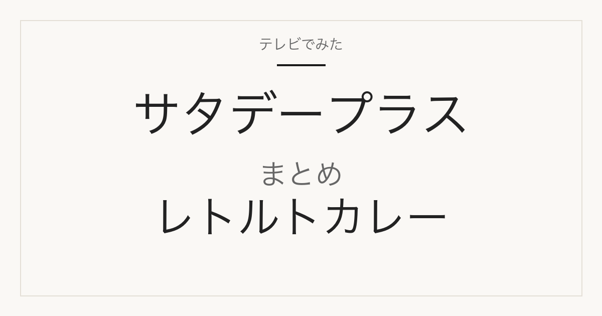

カテゴリまとめ
サタプラで紹介されたレトルトカレー一覧
2026年7月4日「レトルトスパイスカレー」と8月15日「レトルトポークカレー」の2回分を、順位を混ぜずに内容量・タイプ・辛さ・購入先で見比べる

対象は、MBS「サタデープラス」の「ひたすら試してランキング」でレトルトカレーが特集された2回、2026年7月4日「レトルトスパイスカレー」（5品）と2026年8月15日「レトルトポークカレー」（5品）です。順位・商品名・番組掲載価格はMBS公式の放送記事どおりに各回ごとに掲載し、2回分を合算した独自の総合ランキングは作りません。カレーパン（4月18日放送）などカレー関連の別ジャンル、放送回に含まれない同ブランドの類似商品（無印「辛くないグリーンカレー」、ハウス「カレーでニクる。牛肉」など）は対象外です。楽天市場で同一商品を確認できない無印良品・カルディの3品も除外せず、公式店舗・公式通販の案内として載せます。
各回の順位は番組独自の調査によるもので、放送回が異なる商品の順位を混ぜて当サイト独自のランキングにはしていません。番組掲載価格は各放送時点の番組調べです。
放送日・テーマ・各回の1位
| 放送日 | テーマ | その回の1位 | 番組掲載価格 | 品数 |
|---|---|---|---|---|
| 2026年7月4日 | レトルトスパイスカレー | 無印良品「素材を生かしたカレー グリーン」 | 350円 | 5品 |
| 2026年8月15日 | レトルトポークカレー | ニシキヤキッチン「角煮とたまごのスパイシースープカレー」 | 790円 | 5品 |
用途・仕様で比べる
内容量（1袋あたり）
メーカー公式または公式通販の表記。番組掲載価格は1袋の価格なので、量の差がそのまま1食あたりの割高・割安感になります。カルディ2品は公式オンラインストアの検索がcurlでは開けず未確認。
| 商品 | 放送回 | 内容量（1袋あたり） |
|---|---|---|
| 無印良品 素材を生かしたカレー グリーン | 7月4日 レトルトスパイスカレー | 180g（1人前） |
| 新宿中村屋 インドを旅するインドカリー カルダモン香るカシミールビーフ | 7月4日 レトルトスパイスカレー | 180g |
| カルディコーヒーファーム オリジナル ビーフローガンジョシュ カシミールカレー | 7月4日 レトルトスパイスカレー | 未確認 |
| ヤマモリ タイカレー マッサマン | 7月4日 レトルトスパイスカレー | 170g |
| ニシキヤキッチン 夏カレー（レモンスパイシーチキンカレー） | 7月4日 レトルトスパイスカレー | 180g |
| ニシキヤキッチン 角煮とたまごのスパイシースープカレー | 8月15日 レトルトポークカレー | 330g（スープカレー） |
| 無印良品 素材を生かした ごろごろ野菜と豚ひき肉の大盛りカレー | 8月15日 レトルトポークカレー | 300g（1人前・大盛り） |
| ニシキヤキッチン ポークカレー | 8月15日 レトルトポークカレー | 180g |
| ハウス食品 カレーでニクる。豚肉 | 8月15日 レトルトポークカレー | 160g |
| カルディコーヒーファーム オリジナル ポークビンダルーカレー | 8月15日 レトルトポークカレー | 未確認 |
カレーのタイプと主な肉
メーカー公式の商品説明に基づく分類。スパイス回はタイ・インド系が中心で肉は鶏・牛、ポーク回は全品が豚肉です。
| 商品 | 放送回 | カレーのタイプと主な肉 |
|---|---|---|
| 無印良品 素材を生かしたカレー グリーン | 7月4日 レトルトスパイスカレー | タイ風グリーンカレー／鶏肉・筍・ふくろたけ |
| 新宿中村屋 インドを旅するインドカリー カルダモン香るカシミールビーフ | 7月4日 レトルトスパイスカレー | インド・カシミール風ビーフカリー／牛肉 |
| カルディコーヒーファーム オリジナル ビーフローガンジョシュ カシミールカレー | 7月4日 レトルトスパイスカレー | カシミール風ビーフカレー（商品名より）／詳細は未確認 |
| ヤマモリ タイカレー マッサマン | 7月4日 レトルトスパイスカレー | タイ風マッサマンカレー／鶏肉・じゃがいも・ピーナッツ |
| ニシキヤキッチン 夏カレー（レモンスパイシーチキンカレー） | 7月4日 レトルトスパイスカレー | レモン風味のチキンカレー／鶏肉（数量限定） |
| ニシキヤキッチン 角煮とたまごのスパイシースープカレー | 8月15日 レトルトポークカレー | 北海道風スープカレー／角切り豚肉・味付けゆで卵・れんこん・にんじん |
| 無印良品 素材を生かした ごろごろ野菜と豚ひき肉の大盛りカレー | 8月15日 レトルトポークカレー | 具だくさんの大盛りルーカレー／豚ひき肉・じゃが芋・にんじん |
| ニシキヤキッチン ポークカレー | 8月15日 レトルトポークカレー | 定番のルーカレー／豚肉 |
| ハウス食品 カレーでニクる。豚肉 | 8月15日 レトルトポークカレー | 肉を味わうスパイスカレー／豚肉（箱のままレンジ調理可） |
| カルディコーヒーファーム オリジナル ポークビンダルーカレー | 8月15日 レトルトポークカレー | ポークビンダルー（商品名より）／詳細は未確認 |
辛さ表示（メーカー公式）
各社の表示基準は異なるため、同じ「中辛」でも辛さは同じとは限りません。表示が確認できない商品は未確認。
| 商品 | 放送回 | 辛さ表示（メーカー公式） |
|---|---|---|
| 無印良品 素材を生かしたカレー グリーン | 7月4日 レトルトスパイスカレー | 5辛（無印良品の5段階で最も辛い表示） |
| 新宿中村屋 インドを旅するインドカリー カルダモン香るカシミールビーフ | 7月4日 レトルトスパイスカレー | 未確認（公式説明では「シャープな辛さ」のスパイシーなビーフカリー） |
| カルディコーヒーファーム オリジナル ビーフローガンジョシュ カシミールカレー | 7月4日 レトルトスパイスカレー | 未確認 |
| ヤマモリ タイカレー マッサマン | 7月4日 レトルトスパイスカレー | 未確認（公式商品ページに辛さ表示なし。楽天公式店の商品名は「中辛」） |
| ニシキヤキッチン 夏カレー（レモンスパイシーチキンカレー） | 7月4日 レトルトスパイスカレー | 中辛 |
| ニシキヤキッチン 角煮とたまごのスパイシースープカレー | 8月15日 レトルトポークカレー | 辛口 |
| 無印良品 素材を生かした ごろごろ野菜と豚ひき肉の大盛りカレー | 8月15日 レトルトポークカレー | 2辛（無印良品公式の辛さ目安★★☆☆☆） |
| ニシキヤキッチン ポークカレー | 8月15日 レトルトポークカレー | 中辛 |
| ハウス食品 カレーでニクる。豚肉 | 8月15日 レトルトポークカレー | 未確認 |
| カルディコーヒーファーム オリジナル ポークビンダルーカレー | 8月15日 レトルトポークカレー | 未確認 |
購入先の種類と楽天市場の確認価格
番組掲載価格はMBS公式（番組調べ、各放送日現在）。楽天価格は2026-09-09 14:33に各商品ページの<title>と価格を確認した1袋単品の表示価格で、送料は含みません。無印良品・カルディの自社商品は楽天市場で同一商品を確認できず、店舗・公式通販の案内になります。
| 商品 | 放送回 | 購入先の種類と楽天市場の確認価格 |
|---|---|---|
| 無印良品 素材を生かしたカレー グリーン | 7月4日 レトルトスパイスカレー | 無印良品の店舗・公式ネットストア（番組掲載350円／公式ネットストア350円 2026-02-06時点のWayback保存）。楽天市場に同一商品を確認できず（2026-09-09時点） |
| 新宿中村屋 インドを旅するインドカリー カルダモン香るカシミールビーフ | 7月4日 レトルトスパイスカレー | メーカー商品・スーパーや通販（番組掲載466円／メーカー公式466円税込／楽天24 497円 2026-09-09 14:33） |
| カルディコーヒーファーム オリジナル ビーフローガンジョシュ カシミールカレー | 7月4日 レトルトスパイスカレー | カルディの店舗・公式オンラインストア（番組掲載494円）。楽天市場に同一商品を確認できず（2026-09-09時点） |
| ヤマモリ タイカレー マッサマン | 7月4日 レトルトスパイスカレー | メーカー商品・スーパーや通販（番組掲載453円／メーカー希望小売価格420円税別／ヤマモリ公式楽天市場店 453円 2026-09-09 14:33） |
| ニシキヤキッチン 夏カレー（レモンスパイシーチキンカレー） | 7月4日 レトルトスパイスカレー | 数量限定のメーカー商品（番組掲載590円／楽天エシェランド 640円 2026-09-09 14:33）。ニシキヤ公式通販でも販売ページあり |
| ニシキヤキッチン 角煮とたまごのスパイシースープカレー | 8月15日 レトルトポークカレー | メーカー商品・公式通販や通販（番組掲載790円／楽天マグーズショップ 851円 2026-09-09 14:33） |
| 無印良品 素材を生かした ごろごろ野菜と豚ひき肉の大盛りカレー | 8月15日 レトルトポークカレー | 無印良品の店舗・公式ネットストア（番組掲載350円）。楽天は無印良品公式店以外の出品で1,310円（goods street 2026-09-09 14:33）と放送価格の約3.7倍 |
| ニシキヤキッチン ポークカレー | 8月15日 レトルトポークカレー | メーカー商品・公式通販や通販（番組掲載520円／楽天エシェランド 520円 2026-09-09 14:33） |
| ハウス食品 カレーでニクる。豚肉 | 8月15日 レトルトポークカレー | メーカー商品・スーパーや通販（番組掲載473円／楽天24 477円 2026-09-09 14:33） |
| カルディコーヒーファーム オリジナル ポークビンダルーカレー | 8月15日 レトルトポークカレー | カルディの店舗・公式オンラインストア（番組掲載298円、2回分10品で最も低い番組掲載価格）。楽天市場に同一商品を確認できず（2026-09-09時点）。既存の8月15日記事には未掲載 |
出典・更新日時
- MBS公式「レトルトスパイスカレー」2026年7月4日放送
- MBS公式「レトルトポークカレー」2026年8月15日放送
- 無印良品公式「素材を生かしたカレー グリーン」（Wayback 2026-02-06保存）
- 無印良品公式「素材を生かした ごろごろ野菜と豚ひき肉の大盛りカレー」
- 新宿中村屋公式「インドを旅するインドカリー カルダモン香るカシミールビーフ」
- ヤマモリ公式「タイカレー マッサマン」
- ニシキヤキッチン公式「夏カレー（レモンスパイシーチキンカレー）」
- ニシキヤキッチン公式「角煮とたまごのスパイシースープカレー」
- ニシキヤキッチン公式「ポークカレー」
- ハウス食品公式「カレーでニクる。」ブランドサイト
- 楽天市場 マグーズショップ「にしきや 角煮とたまごのスパイシースープカレー 330g」
- 楽天市場 goods street「無印良品 ごろごろ野菜と豚ひき肉の大盛りカレー」
- 楽天市場 エシェランド「にしきや ポークカレー 180g 中辛」
- 楽天市場 楽天24「カレーでニクる。豚肉 160g」
- 楽天市場 楽天24「新宿中村屋 カシミールビーフ 180g」
- 楽天市場 ヤマモリ公式「タイカレー マッサマン 1個」
- 楽天市場 エシェランド「にしきや 夏カレー レモンスパイシーチキンカレー 180g」
公開：2026年9月9日／最終更新：2026年9月9日